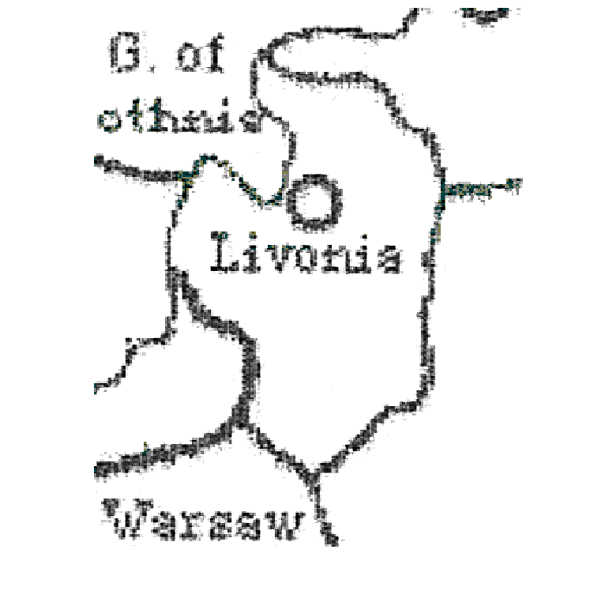

|
This important province in the Baltic Sea has been ignored far too often. This is a shame, as in the end-game (and possibly creamy middle-game) owning this province practically ensures victory. Don’t understand? Then read on. Suppose you sit down with six of your friends and begin to choose powers. Who wants to pick a lousy power with only three units? You want a power to start off with FOUR or even SEVEN units if possible. That’s why you choose Russia, lots of units: and if drinking is involved, you get to pretend to be a guy named Boris and talk in a horrible accent. Then, when no one is looking you sneak an extra block or two and place them in your country. No one will notice, they’ll just think “that’s Russia, he starts off with a lot of units.” Wrong. What your friends will think is “Man, that Russia guy sure looks threatening. We’d better attack him.” Then you get Turks in the Black Sea, English in St. Petersburg and France in Spain. Below is an unedited, typical conversation about Russia:
This classic mistake is known as “Early Leader Syndrome”. No one wants to become too large too fast, or else they become a target. The crafty Czar (and sometimes Tsar) will find a way to be very powerful, but appear non-threatening. That way when they get attacked, they can throw their hands up in the air and claim innocence. Once your opponents feel pity for you, you can turn around and roll the board. It is for this reason why Russia nabs most of the wins in standard Diplomacy. So how you ask, does a Czar/Tsar make himself look non-threatening? Answer: Livonia. Livonia Ownership Percentages
Check out the above table. You can see that Russia retains control of Livonia in the first game year almost 100% of the time. During a game with some of my friends, I took note of that fact. Later in the game, Russia was beating me as Russia always does. I became suspicious. Calling in a favor with in the CIA, I was able to obtain a satellite image of Livonia, and I was startled at what I saw. Livonia is a Russian Supply Center! No wonder Russia is so powerful, he has a secret supply center! Either that or, Livonia is building one heckuva hadron collider. Possibly both. It would explain the abnormal amount of top quarks in found in the Russian arsenal. The implications of this phantom supply center/supercollider are enormous. Russia starts with five units, ONE OF WHICH IS CLOAKED. And since no one ever enters Livonia, no one ever finds out about it. If this supercollider/supply center has energies in the TeV range, Livonia may get the dreaded Higgs Boson. And if that happens, God help us all.
|